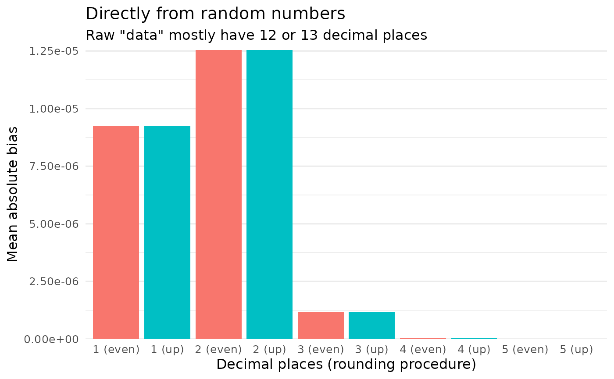
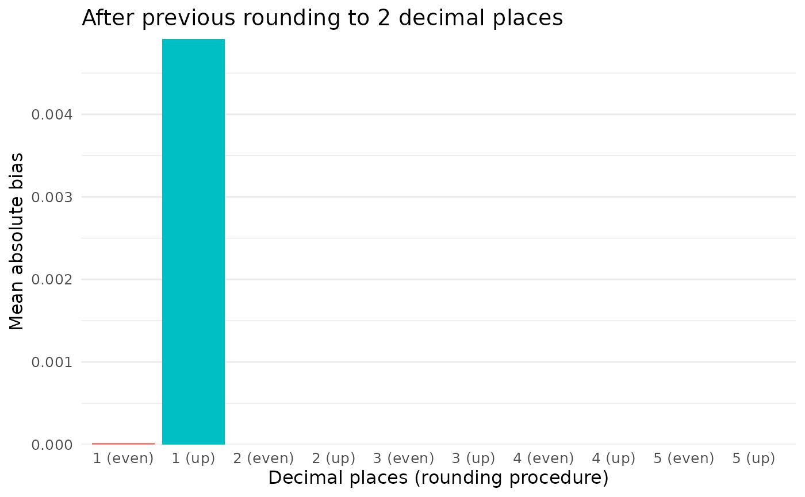

Large parts of scrutiny are about rounding. This topic is more diverse and variegated than one might think. “Rounding” is often taken to simply mean rounding up from 5, and although that’s wrong, it doesn’t make much of a difference most of the time.
One place where it does matter is in reconstructing the rounding procedures that others used, claim to have used, or are alleged to have used. In short, rounding and all its details matter for error detection.
This vignette goes into depth on scrutiny’s infrastructure for reconstructing rounding procedures and results from summary statistics. All of that is essential for the package: it is a precondition for translating assumptions about the processes behind published summary data into a few simple, higher-level function calls. Some of the functions presented here might be useful beyond the package, as well.
Feel free to skip the more theoretical parts if your focus is on the
code. See vignette("rounding-options") for a list of
possible values of the rounding argument in scrutiny
functions.
Overview
Base R’s round() function is surprisingly sophisticated.
This distinguishes it from simpler rounding procedures, such as rounding
up from 5. For this very reason, however, it can’t be used to
reconstruct the rounding procedures of other software programs. This is
the job of scrutiny’s rounding functions.
First, I will present reround(), a general interface to
reconstructing rounded numbers, before going through the individual
rounding functions. I will also discuss unround(), which
works the reverse way: It takes a rounded number and reconstructs the
bounds of the original number, taking details about the assumed rounding
procedure into account. Finally, I will take a closer look at bias from
rounding raw numbers.
Reconstruct rounded numbers with reround()
None of the error detection techniques in scrutiny calls the
individual rounding functions directly. Instead, all of them call
reround(), which mediates between these two levels.
reround() takes the vector of “raw” reconstructed numbers
that were not yet rounded in the way that’s assumed to have been the
original rounding procedure. Its next argument is digits,
the number of decimal places to round to.
The remaining three arguments are about the rounding procedure. Most
of the time, only rounding will be of any interest. It
takes a string with the name of one of the rounding procedures discussed
below.
Here is an example for a reround() call:
The two remaining arguments are mostly forgettable: They only concern
obscure cases of rounding with a threshold other than 5
(threshold) and rounding such that the absolute values of
positive and negative numbers are the same (symmetric).
Ignore them otherwise.
Rounding procedures in detail
Up and down
round_up() does what most people think of as rounding.
If the decimal portion to be cut off by rounding is 5 or greater, it
rounds up. Otherwise, it rounds down.
round_up(x = 1.24, digits = 1)
#> [1] 1.2
round_up(x = 1.25, digits = 1)
#> [1] 1.3
round_up(x = 1.25) # default for `digits` is 0
#> [1] 1Rounding up from 5 is actually a special case of
round_up_from(), which can take any numeric threshold, not
just 5:
round_up_from(x = 4.28, digits = 1, threshold = 9)
#> [1] 4.2
round_up_from(x = 4.28, digits = 1, threshold = 1)
#> [1] 4.3These two functions have their mirror images in
round_down() and round_down_from(). The
arguments are the same as in round_up():
round_down(x = 1.24, digits = 1)
#> [1] 1.2
round_down(x = 1.25, digits = 1)
#> [1] 1.2
round_down(x = 1.25) # default for `digits` is 0
#> [1] 1round_down_from(), then, is just the reverse of
round_up_from():
round_down_from(x = 4.28, digits = 1, threshold = 9)
#> [1] 4.3
round_down_from(x = 4.28, digits = 1, threshold = 1)
#> [1] 4.2Rounding up implements this formula:
\[ \frac{\lfloor x(10^d) +1 - \frac{t}{10} \rfloor}{10^d} \]
where \(x\) is the number to be rounded, \(d\) is the number of decimal places to which \(x\) should be rounded, and \(t\) is the threshold for rounding up (e.g., \(t = 5\) for rounding up from 5). Note that \(\lfloor n \rfloor\) floors a number \(n\), and \(\lceil n \rceil\) ceils it.
Rounding down works accordingly. Note that \(+\) and \(-\) are reversed here:
\[ \frac{\lceil x(10^d) - 1 + \frac{t}{10} \rceil}{10^d} \]
To even (base R)
Like Python’s round()
function, R’s base::round() doesn’t round up or down, or
use any other procedure based solely on the truncated part of the
number. Instead, round() strives to round to the next even
number. This is also called “banker’s rounding”, and it follows a
technical standard, IEEE
754.
Realizing that round() works in a highly unintuitive way
sometimes leads to consternation. Why can’t we just round like we
learned in school, that is, up from 5? The reason seems to be bias.
Because 5 is right in between two whole numbers, any procedure that
rounds 5 in some predetermined direction introduces a bias toward that
direction. Rounding up from 5 is therefore biased upward, and rounding
down from 5 is biased downward.
As shown in the Rounding bias section below, this is unlikely to be a major issue when rounding raw numbers that originally have many decimal places. It might be more serious, however, if the initial number of decimal places is low (for whatever reason) and the need for precision is high.
At least in theory, “rounding to even” is not biased in either
direction, and it preserves the mean of the original distribution. That
is how round() aims to operate. Here is a case in which it
works out, whereas the bias of rounding up or down is fully
apparent:
vec1 <- seq(from = 0.5, to = 9.5)
up1 <- round_up(vec1)
down1 <- round_down(vec1)
even1 <- round(vec1)
vec1
#> [1] 0.5 1.5 2.5 3.5 4.5 5.5 6.5 7.5 8.5 9.5
up1
#> [1] 1 2 3 4 5 6 7 8 9 10
down1
#> [1] 0 1 2 3 4 5 6 7 8 9
even1
#> [1] 0 2 2 4 4 6 6 8 8 10
# Original mean
mean(vec1)
#> [1] 5
# Means when rounding up or down: bias!
mean(up1)
#> [1] 5.5
mean(down1)
#> [1] 4.5
# Mean when rounding to even: no bias
mean(even1)
#> [1] 5However, this noble goal of unbiased rounding runs up against the
reality of floating point arithmetic. You might therefore get results
from round() that first seem bizarre, or at least
unpredictable. Consider:
vec2 <- seq(from = 4.5, to = 10.5)
up2 <- round_up(vec2)
down2 <- round_down(vec2)
even2 <- round(vec2)
vec1
#> [1] 0.5 1.5 2.5 3.5 4.5 5.5 6.5 7.5 8.5 9.5
up2
#> [1] 5 6 7 8 9 10 11
down2
#> [1] 4 5 6 7 8 9 10
even2 # No symmetry here...
#> [1] 4 6 6 8 8 10 10
mean(vec2)
#> [1] 7.5
mean(up2)
#> [1] 8
mean(down2)
#> [1] 7
mean(even2) # ... and the mean is slightly biased downward!
#> [1] 7.428571
vec3 <- c(
1.05, 1.15, 1.25, 1.35, 1.45,
1.55, 1.65, 1.75, 1.85, 1.95
)
# No bias here, though:
round(vec3, 1)
#> [1] 1.0 1.1 1.2 1.4 1.4 1.6 1.6 1.8 1.9 2.0
mean(vec3)
#> [1] 1.5
mean(round(vec3, 1))
#> [1] 1.5Sometimes round() behaves just as it should, but at
other times, results can be hard to explain. Martin Mächler, who wrote
the present version of round(), describes the issue about
as follows:
The reason for the above behavior is that most decimal fractions can’t, in fact, be represented as double precision numbers. Even seemingly “clean” numbers with only a few decimal places come with a long invisible mantissa, and are therefore closer to one side or the other.
We usually think that rounding rules are all about breaking a tie
that occurs at 5. Most floating-point numbers, however, are just
somewhat less than or greater than 5. There is no tie! Consequently,
Mächler says, rounding functions need to “measure, not guess
which of the two possible decimals is closer to x” — and
therefore, which way to round.
This seems better than following mathematical intuitions that may not always correspond to the way computers actually deal with numbers. R has used the present solution since version 4.0.0.
base::round() can seem like a black box, but it seems
unbiased in the long run. I recommend using round() for
original work, even though it is quite different from other rounding
procedures — and therefore unsuitable for reconstructing them. Instead,
we need something like scrutiny’s round_*() functions.
IEEE 754 rounding standard
base::round() and some of scrutiny’s rounding functions
correspond to the IEEE 754 rounding standard (IEEE 2019, pp. 27f.; the
Wikipedia
page is more accessible). IEEE 754 defines standards for
floating-point operations, which includes rounding.
This table shows how base::round() and scrutiny
correspond to IEEE 754:
| Function | IEEE 754 attribute |
|---|---|
base::round() |
roundTiesToEven |
round_up() with symmetric = TRUE
|
roundTiesToAway |
round_ceiling() |
roundTowardPositive |
round_floor() |
roundTowardNegative |
round_trunc() |
roundTowardZero |
Admittedly, scrutiny’s rounding functions were written without this
standard in mind. That is why their names don’t match those of the IEEE
rounding procedures (or “rounding-direction attributes”), and why one of
them requires the optional symmetric argument to meet the
standard. A more straightforward mapping might be more desirable, and
future breaking changes in a major version of scrutiny are not out of
the question. However, other considerations apply, as well.
Reconstruct rounding bounds with unround()
Rounding leads to a loss of information. The mantissa is cut off in part or in full, and the resulting number is underdetermined with respect to the original number: The latter can’t be inferred from the former. It might be of interest, however, to compute the range of the original number given the rounded number (especially the number of decimal places to which it was rounded) and the presumed rounding method.
While it’s often easy to infer such a range, we better have the
computer do it. Enter unround(). It returns the lower and
upper bounds, and it says whether these bounds are inclusive or not —
something that varies greatly by rounding procedure. Currently,
unround() is used as a helper within scrutiny’s DEBIT
implementation; see vignette("debit").
The default rounding procedure for unround() is
"up_or_down":
unround(x = "8.0")
#> # A tibble: 1 × 7
#> range rounding lower incl_lower x incl_upper upper
#> <chr> <chr> <dbl> <lgl> <chr> <lgl> <dbl>
#> 1 7.95 <= x(8.0) <= 8.05 up_or_down 7.95 TRUE 8.0 TRUE 8.05For a complete list of featured rounding procedures, see
documentation for unround(), section Rounding.
On the left, the range column displays a pithy graphical
overview of the other columns (except for rounding) in the
same order:
-
loweris the lower bound for the original number. -
incl_lowerisTRUEif the lower bound is inclusive andFALSEotherwise. -
xis the input value. -
incl_upperisTRUEif the upper bound is inclusive andFALSEotherwise. -
upperis the upper bound for the original number.
By default, decimal places are counted internally so that the
function always operates on the appropriate decimal level. This creates
a need to take trailing zeros into account, which is why x
needs to be a string:
unround(x = "3.50", rounding = "up")
#> # A tibble: 1 × 7
#> range rounding lower incl_lower x incl_upper upper
#> <chr> <chr> <dbl> <lgl> <chr> <lgl> <dbl>
#> 1 3.495 <= x(3.50) < 3.505 up 3.50 TRUE 3.50 FALSE 3.50Alternatively, a function that uses unround() as a
helper might count decimal places by itself (i.e., by internally calling
decimal_places()). It should then pass these numbers to
unround() via the decimals argument instead of
letting it redundantly count decimal places a second time.
In this case, x can be numeric because trailing zeros
are no longer needed. (That, in turn, is because the responsibility to
count decimal places in number-strings rather than numeric values shifts
from unround() to the higher-level function.)
The following call returns the exact same tibble as above:
unround(x = 3.5, digits = 2, rounding = "up")
#> # A tibble: 1 × 7
#> range rounding lower incl_lower x incl_upper upper
#> <chr> <chr> <dbl> <lgl> <dbl> <lgl> <dbl>
#> 1 3.495 <= x(3.5) < 3.505 up 3.50 TRUE 3.5 FALSE 3.50Since x is vectorized, you might test several reported
numbers at once:
vec2 <- c(2, 3.1, 3.5) %>%
restore_zeros()
vec2 # `restore_zeros()` returns "2.0" for 2
#> [1] "2.0" "3.1" "3.5"
vec2 %>%
unround(rounding = "even")
#> # A tibble: 3 × 7
#> range rounding lower incl_lower x incl_upper upper
#> <chr> <chr> <dbl> <lgl> <chr> <lgl> <dbl>
#> 1 1.95 < x(2.0) < 2.05 even 1.95 FALSE 2.0 FALSE 2.05
#> 2 3.05 < x(3.1) < 3.15 even 3.05 FALSE 3.1 FALSE 3.15
#> 3 3.45 < x(3.5) < 3.55 even 3.45 FALSE 3.5 FALSE 3.55Fractional rounding
What if you want to round numbers to a fraction instead of an
integer? Check out reround_to_fraction() and
reround_to_fraction_level():
reround_to_fraction(x = 0.4, denominator = 2, rounding = "up")
#> [1] 0.5This function rounds 0.4 to 0.5 because
that’s the closest fraction of 2. It is inspired by
janitor::round_to_fraction(), and credit for the core
implementation goes there. reround_to_fraction() blends
janitor’s fractional rounding with the flexibility and precision that
reround() provides.
What’s more, reround_to_fraction_level() rounds to the
nearest fraction at the decimal level specified via its
digits argument:
reround_to_fraction_level(
x = 0.777, denominator = 5, digits = 0, rounding = "down"
)
#> [1] 0.8
reround_to_fraction_level(
x = 0.777, denominator = 5, digits = 1, rounding = "down"
)
#> [1] 0.78
reround_to_fraction_level(
x = 0.777, denominator = 5, digits = 2, rounding = "down"
)
#> [1] 0.776These two functions are not currently part of any error detection workflow.
Rounding bias
I wrote above that rounding up or down from 5 is biased. However,
this points to a wider problem: It is true of any rounding procedure
that doesn’t take active precautions against such bias.
base::round() does, and that is why I recommend it for
original work (as opposed to reconstruction).
It might be useful to have a general and flexible way to quantify how
far rounding biases a distribution, as compared to how it looked like
before rounding. The function rounding_bias() fulfills this
role. It is a wrapper around reround(), so it can access
any rounding procedure that reround() can, and takes all of
the same arguments. However, the default for rounding is
"up" instead of "up_or_down" because
rounding_bias() only makes sense with single rounding
procedures.
In general, bias due to rounding is computed by subtracting the original distribution from the rounded one:
\[ bias = x_{rounded} - x \]
By default, the mean is computed to reduce the bias to a single data point:
vec3 <- seq(from = 0.6, to = 0.7, by = 0.01)
vec3
#> [1] 0.60 0.61 0.62 0.63 0.64 0.65 0.66 0.67 0.68 0.69 0.70
# The mean before rounding...
mean(vec3)
#> [1] 0.65
# ...is not the same as afterwards...
mean(round_up(vec3))
#> [1] 1
# ...and the difference is bias:
rounding_bias(x = vec3, digits = 0, rounding = "up")
#> [1] 0.35Set mean to FALSE to return the whole
vector of individual biases instead:
rounding_bias(x = vec3, digits = 0, rounding = "up", mean = FALSE)
#> [1] 0.40 0.39 0.38 0.37 0.36 0.35 0.34 0.33 0.32 0.31 0.30Admittedly, this example is somewhat overdramatic. Here is a rather harmless one:
vec4 <- rnorm(50000, 100, 15)
rounding_bias(vec4, digits = 2)
#> [1] 2.668842e-05What is responsible for such a difference? It seems to be (1) the sample size and (2) the number of decimal places to which the vector is rounded. The rounding method doesn’t appear to matter if numbers with many decimal places are rounded:
#> # A tibble: 10 × 3
#> bias decimal_digits rounding
#> <dbl> <chr> <chr>
#> 1 0.000173 1 up up
#> 2 0.0000267 2 up up
#> 3 0.000000812 3 up up
#> 4 0.0000000604 4 up up
#> 5 0.0000000114 5 up up
#> 6 0.000173 1 even even
#> 7 0.0000267 2 even even
#> 8 0.000000812 3 even even
#> 9 0.0000000604 4 even even
#> 10 0.0000000114 5 even even
However, if the raw values are preliminarily rounded to 2 decimal places before rounding proceeds as above, the picture is different:
#> # A tibble: 10 × 3
#> bias decimal_digits rounding
#> <dbl> <chr> <chr>
#> 1 0.00508 1 up up
#> 2 0 2 up up
#> 3 0 3 up up
#> 4 0 4 up up
#> 5 0 5 up up
#> 6 0.00000580 1 even even
#> 7 0 2 even even
#> 8 0 3 even even
#> 9 0 4 even even
#> 10 0 5 even even
In sum, the function allows users to quantify the degree to which rounding biases a distribution, so that they can assess the relative merits of different rounding procedures. This is partly to sensitize readers to potential bias in edge cases, but also to enable them to make informed rounding decisions on their own.